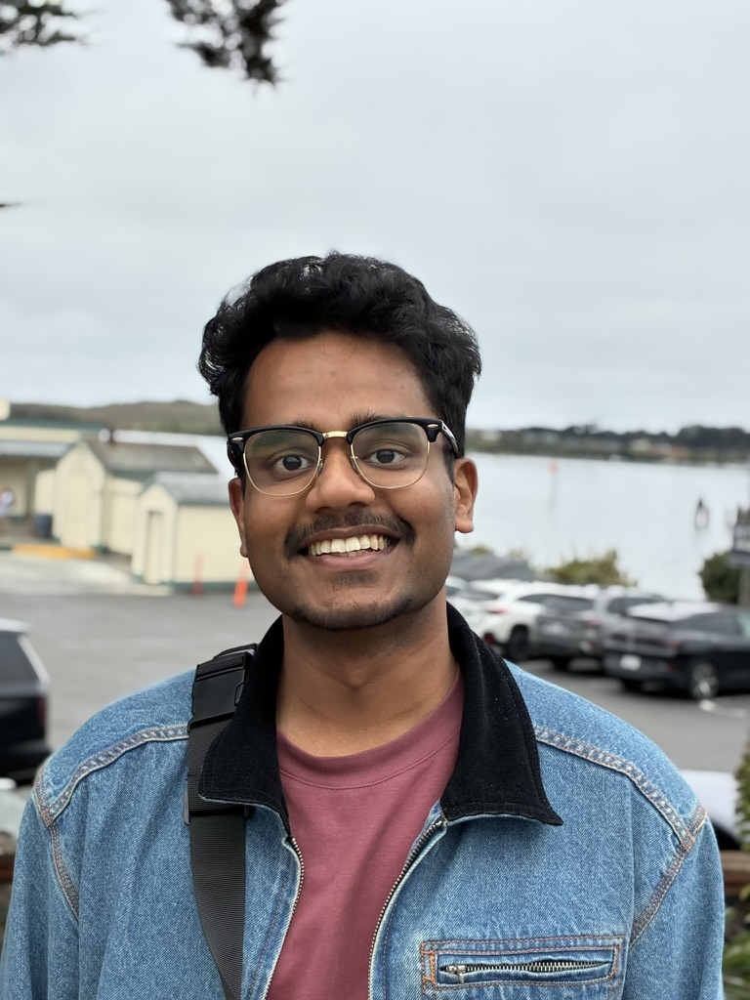

Sarthak Kumar Maharana
sarthakmaharana9811@gmail.com
I'm a CS PhD candidate at the University of Texas at Dallas, advised by Dr. Yunhui Guo. I'm also a part of the Data Efficient Intelligent Learning Lab. I broadly study computer vision and representation learning.
In the initial years of my PhD, I explored continual learning, adaptive, and on-device ML, and designed efficient schemes to make models robust and adaptable in open and dynamic environments. My research is grounded in the belief that AI systems must continually adapt to the world, and not be stagnant. I also spent the Summer of 2025 at Dolby Laboratories working on robust audio-visual learning in continual learning settings.
Lately, I've also been trying to break into the Physical AI space especially for autonomous driving. There's a great deal of work to be done in building systems that can perceive, reason, plan, and generalize in safety-critical environments.
Before my PhD, I completed my Master's in Electrical Engineering from USC and a Bachelor's degree from IIIT Bhubaneswar, India. I've been fortunate to work with Dr. Yonggang Shi (USC), Dr. Shri Narayanan (USC), Dr. Ren Hongliang (NUS), Dr. Prasanta Kumar Ghosh (IISc), and Dr. Aurobinda Routray (IIT-Kharagpur).
I have published at top-tier ML/computer vision/signal processing venues such as TMLR, ICCV, NeurIPS (3x), AAAI, ECCV, and ICASSP (2x).
If my research interests align with yours, I'd love to chat, discuss, and explore potential collaborations. Feel free to reach out!
News
- Apr '26 After a major hiatus, will be reviewing for NeurIPS 2026.
- Apr '26 I'll be joining NEC Laboratories America, Inc., as a research scientist intern and work on real-time reasoning and planning for autonomous driving. Fun times ahead! 🚗💨
- Feb '26 Variational Diffusion Unlearning has been accepted to TMLR'26.
- Oct '25 Gave a talk at the MCL workshop @ ICCV 2025.
- Sep '25 AVROBUSTBENCH has been accepted to NeurIPS (D&B) 2025! See you in San Diego, CA! 🏖️🌮
- Aug '25 Received a travel grant from the ICCV community!
- June '25 BATCLIP has been accepted to ICCV 2025. See you in the gorgeous Hawai'i! 🌴
- May '25 We're organizing the 1st Workshop on Multimodal Continual Learning at ICCV 2025!
- May '25 Crushed my quals — officially a PhD candidate now!
- Mar '25 Excited to be co-organizing the 2nd Workshop on Test-Time Adaptation: Putting Updates to the Test at ICML 2025!
- Feb '25 This summer, I'll be joining Dolby Laboratories as a PhD Research Intern!
- Dec '24 PALM has been accepted to AAAI 2025 for an Oral presentation!
- Nov '24 Serving as a CVPR 2025 reviewer.
- Oct '24 Variational Diffusion Unlearning (VDU) is accepted to the NeurIPS SafeGenAI workshop 2024!
- Sep '24 Our paper on submodular optimization for active 3D object detection has been accepted to NeurIPS 2024!
- Aug '24 Serving as a reviewer for ICLR 2025.
- Jul '24 Our paper on DNN watermarking has been accepted to ECCV 2024!
- Show more...
Papers
Academic & Volunteer Work
- Research Advisor - CAIR@UTD
- Workshop Co-organizer: 2nd Workshop on Test-Time Adaptation @ ICML 2025, 1st Workshop on Multimodal Continual Learning @ ICCV 2025
- Reviewer - TMLR 2026, NeurIPS 2026, CVPR 2025, ICLR 2025, NeurIPS Workshops 2024, BMVC 2024, ECCV 2024, CVPR Workshops 2024, AAAI 2024
Random
- I'm a cis male.
- I grew up in two beautiful Indian cities, Bangalore and Bhubaneswar, which shaped my character. I've also spent two enriching years in Los Angeles, California. I'm always keen to explore new places and experience different cultures.
- I'm a huge fan of classical cricket formats. You'll often find me watching old test match highlights or rewatching SRT straight drives. Nothing beats that! I don't consider IPL/T20 cricket as a real format.
- Mobile photography is my side passion? My phone comes out the moment I spot a beautiful view.
- I spend considerable time exploring quality humor, particularly dark humor. Let's talk about it sometime!